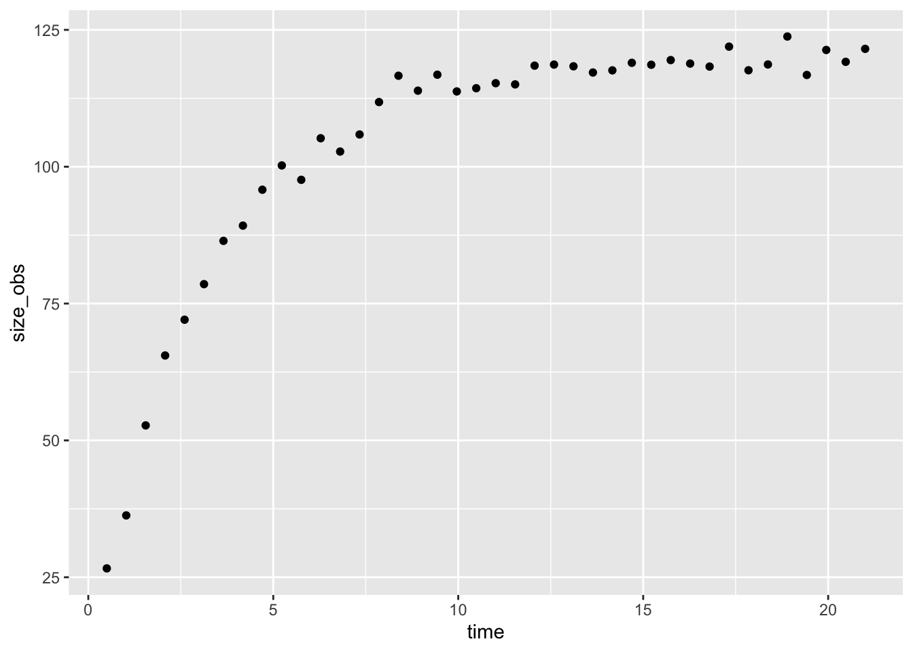
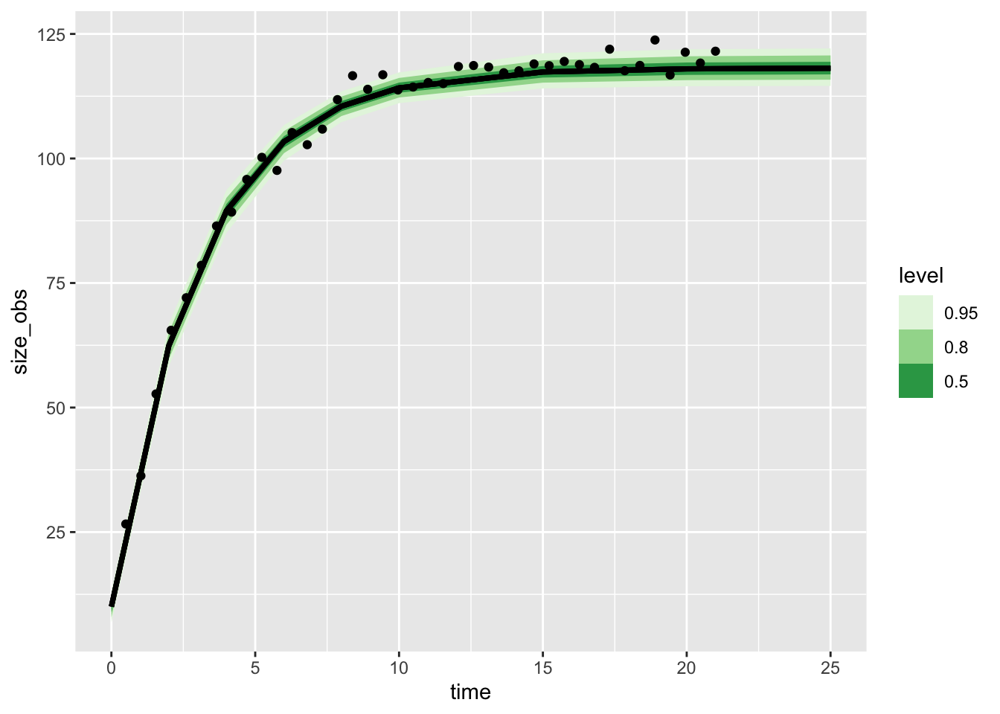

library(targets)
library(ggplot2)
library(tidyverse)
library(tidybayes)growing things get bigger
the classic Von Bertanaffy growth equation has animals growing from a starting size to a final size
L0 <- 13
Lmax <- 120
r <- .3
curve(L0 * exp(-r*x) + Lmax*(1 - exp(-r * x)), xlim = c(0, 20))
This is the equation in continuous time
however we often measure animals at discreet moments in time, having as a reference their last measurement. We can use a discrete version of this equation in these cases:
vb_disc <- function(L_tm1, r, time, Lmax) {
L_tm1 * exp(-r*time) + Lmax*(1 - exp(-r * time))
}
timevec <- rep(1, times = 13)
size <- numeric(length(timevec)+1)
size[1] <- 13
for (t in 1:length(timevec)){
size[t+1] = vb_disc(size[t],
r = r,
time = timevec[t],
Lmax = Lmax)
}
curve(L0 * exp(-r*x) + Lmax*(1 - exp(-r * x)),
xlim = c(0, 20))
points(cumsum(c(0,timevec)), size)This works even if the points we measure at are not regular:
timevec <- runif(n = 13, min = .7, max = 3)
size <- numeric(length(timevec)+1)
size[1] <- 13
for (t in 1:length(timevec)){
size[t+1] = vb_disc(size[t],
r = r,
time = timevec[t],
Lmax = Lmax)
}
curve(L0 * exp(-r*x) + Lmax*(1 - exp(-r * x)),
xlim = c(0, 20))
points(cumsum(c(0,timevec)), size)So we can see that this is the same equation. Let’s simulate observations of a growing animal with measurement error
L0 <- 13
Lmax <- 120
r <- .3
sigma = 2
grow_data <- tibble(time = seq(from = .5, to = 21, length.out = 40),
size = L0 * exp(-r* time) + Lmax*(1 - exp(-r * time)),
size_obs = rnorm(n = length(size), mean = size, sd = sigma))
grow_data |>
ggplot(aes(x = time, y = size_obs)) + geom_point()
library(cmdstanr)This is cmdstanr version 0.5.3- CmdStanR documentation and vignettes: mc-stan.org/cmdstanr- CmdStan path: /Users/amacdonald/.cmdstan/cmdstan-2.31.0- CmdStan version: 2.31.0
A newer version of CmdStan is available. See ?install_cmdstan() to install it.
To disable this check set option or environment variable CMDSTANR_NO_VER_CHECK=TRUE.vb_discrete <- cmdstan_model(
here::here(
"posts/2023-10-23-discrete-vb-brms-stan/vb_discrete_meas.stan"),
pedantic = TRUE)Warning in '/var/folders/x7/l08zn2396g797m5ws54np_6w0000gp/T/RtmpzcvhfH/model-16ab499914d0.stan', line 17, column 16: Argument
120 suggests there may be parameters that are not unit scale; consider
rescaling with a multiplier (see manual section 22.12).vb_discrete data {
int<lower=0> n;
real age_first_meas;
vector[n-1] time_diff;
vector[n] obs_size;
int<lower=0> n_pred;
vector[n_pred-1] diff_pred;
}
parameters {
real<lower=0> Lstart;
real<lower=0> Lmax;
real<lower=0> r;
real<lower=0> sigma;
}
model {
Lstart ~ normal(10, 2);
Lmax ~ normal(120, 10);
r ~ exponential(1);
sigma ~ exponential(1);
// could add measurment error to age
obs_size[1] ~ normal(Lstart * exp(-r*age_first_meas) + Lmax*(1 - exp(-r * age_first_meas)), sigma);
obs_size[2:n] ~ normal(obs_size[1:(n-1)] .* exp(-r*time_diff) + Lmax*(1 - exp(-r*time_diff)), sigma);
}
generated quantities {
vector[n_pred] mu;
vector[n_pred] obs;
mu[1] = Lstart;
for (i in 2:n_pred){
mu[i] = mu[i-1] .* exp(-r*diff_pred[i-1]) + Lmax*(1 - exp(-r*diff_pred[i-1]));
}
for( j in 1:n_pred){
obs[j] = normal_rng(mu[j], sigma);
}
}some_obs <- grow_data |>
mutate(sampled = sample(sample(0:1, length(time), replace = TRUE, prob = c(.4, .6)))) |>
filter(sampled > 0) |>
# lagged time
mutate(time_diff = time - lag(time))
first <- some_obs |> head(1)
rest <- some_obs |> slice(-1)
diff_pred <- c(rep(2, times = 5), rep(5, 3))
vb_discrete_post <- vb_discrete$sample(data = list(
n = nrow(some_obs),
time_diff = rest$time_diff,
age_first_meas = first$time,
obs_size = some_obs$size_obs,
n_pred = length(diff_pred) + 1,
diff_pred = diff_pred
))Running MCMC with 4 sequential chains...
Chain 1 Iteration: 1 / 2000 [ 0%] (Warmup)
Chain 1 Iteration: 100 / 2000 [ 5%] (Warmup)
Chain 1 Iteration: 200 / 2000 [ 10%] (Warmup)
Chain 1 Iteration: 300 / 2000 [ 15%] (Warmup)
Chain 1 Iteration: 400 / 2000 [ 20%] (Warmup)
Chain 1 Iteration: 500 / 2000 [ 25%] (Warmup)
Chain 1 Iteration: 600 / 2000 [ 30%] (Warmup)
Chain 1 Iteration: 700 / 2000 [ 35%] (Warmup)
Chain 1 Iteration: 800 / 2000 [ 40%] (Warmup)
Chain 1 Iteration: 900 / 2000 [ 45%] (Warmup)
Chain 1 Iteration: 1000 / 2000 [ 50%] (Warmup)
Chain 1 Iteration: 1001 / 2000 [ 50%] (Sampling)
Chain 1 Iteration: 1100 / 2000 [ 55%] (Sampling)
Chain 1 Iteration: 1200 / 2000 [ 60%] (Sampling)
Chain 1 Iteration: 1300 / 2000 [ 65%] (Sampling)
Chain 1 Iteration: 1400 / 2000 [ 70%] (Sampling)
Chain 1 Iteration: 1500 / 2000 [ 75%] (Sampling)
Chain 1 Iteration: 1600 / 2000 [ 80%] (Sampling)
Chain 1 Iteration: 1700 / 2000 [ 85%] (Sampling)
Chain 1 Iteration: 1800 / 2000 [ 90%] (Sampling) Chain 1 Informational Message: The current Metropolis proposal is about to be rejected because of the following issue:Chain 1 Exception: normal_lpdf: Location parameter is nan, but must be finite! (in '/var/folders/x7/l08zn2396g797m5ws54np_6w0000gp/T/RtmpzcvhfH/model-16ab499914d0.stan', line 22, column 2 to column 101)Chain 1 If this warning occurs sporadically, such as for highly constrained variable types like covariance matrices, then the sampler is fine,Chain 1 but if this warning occurs often then your model may be either severely ill-conditioned or misspecified.Chain 1 Chain 1 Informational Message: The current Metropolis proposal is about to be rejected because of the following issue:Chain 1 Exception: normal_lpdf: Location parameter is nan, but must be finite! (in '/var/folders/x7/l08zn2396g797m5ws54np_6w0000gp/T/RtmpzcvhfH/model-16ab499914d0.stan', line 22, column 2 to column 101)Chain 1 If this warning occurs sporadically, such as for highly constrained variable types like covariance matrices, then the sampler is fine,Chain 1 but if this warning occurs often then your model may be either severely ill-conditioned or misspecified.Chain 1 Chain 1 Informational Message: The current Metropolis proposal is about to be rejected because of the following issue:Chain 1 Exception: normal_lpdf: Location parameter is nan, but must be finite! (in '/var/folders/x7/l08zn2396g797m5ws54np_6w0000gp/T/RtmpzcvhfH/model-16ab499914d0.stan', line 22, column 2 to column 101)Chain 1 If this warning occurs sporadically, such as for highly constrained variable types like covariance matrices, then the sampler is fine,Chain 1 but if this warning occurs often then your model may be either severely ill-conditioned or misspecified.Chain 1 Chain 1 Iteration: 1900 / 2000 [ 95%] (Sampling)
Chain 1 Iteration: 2000 / 2000 [100%] (Sampling)
Chain 1 finished in 0.1 seconds.
Chain 2 Iteration: 1 / 2000 [ 0%] (Warmup)
Chain 2 Iteration: 100 / 2000 [ 5%] (Warmup)
Chain 2 Iteration: 200 / 2000 [ 10%] (Warmup)
Chain 2 Iteration: 300 / 2000 [ 15%] (Warmup)
Chain 2 Iteration: 400 / 2000 [ 20%] (Warmup)
Chain 2 Iteration: 500 / 2000 [ 25%] (Warmup)
Chain 2 Iteration: 600 / 2000 [ 30%] (Warmup)
Chain 2 Iteration: 700 / 2000 [ 35%] (Warmup)
Chain 2 Iteration: 800 / 2000 [ 40%] (Warmup)
Chain 2 Iteration: 900 / 2000 [ 45%] (Warmup)
Chain 2 Iteration: 1000 / 2000 [ 50%] (Warmup)
Chain 2 Iteration: 1001 / 2000 [ 50%] (Sampling)
Chain 2 Iteration: 1100 / 2000 [ 55%] (Sampling)
Chain 2 Iteration: 1200 / 2000 [ 60%] (Sampling)
Chain 2 Iteration: 1300 / 2000 [ 65%] (Sampling)
Chain 2 Iteration: 1400 / 2000 [ 70%] (Sampling)
Chain 2 Iteration: 1500 / 2000 [ 75%] (Sampling)
Chain 2 Iteration: 1600 / 2000 [ 80%] (Sampling)
Chain 2 Iteration: 1700 / 2000 [ 85%] (Sampling)
Chain 2 Iteration: 1800 / 2000 [ 90%] (Sampling)
Chain 2 Iteration: 1900 / 2000 [ 95%] (Sampling)
Chain 2 Iteration: 2000 / 2000 [100%] (Sampling) Chain 2 Informational Message: The current Metropolis proposal is about to be rejected because of the following issue:Chain 2 Exception: normal_lpdf: Location parameter is nan, but must be finite! (in '/var/folders/x7/l08zn2396g797m5ws54np_6w0000gp/T/RtmpzcvhfH/model-16ab499914d0.stan', line 22, column 2 to column 101)Chain 2 If this warning occurs sporadically, such as for highly constrained variable types like covariance matrices, then the sampler is fine,Chain 2 but if this warning occurs often then your model may be either severely ill-conditioned or misspecified.Chain 2 Chain 2 finished in 0.1 seconds.
Chain 3 Iteration: 1 / 2000 [ 0%] (Warmup)
Chain 3 Iteration: 100 / 2000 [ 5%] (Warmup)
Chain 3 Iteration: 200 / 2000 [ 10%] (Warmup)
Chain 3 Iteration: 300 / 2000 [ 15%] (Warmup)
Chain 3 Iteration: 400 / 2000 [ 20%] (Warmup)
Chain 3 Iteration: 500 / 2000 [ 25%] (Warmup)
Chain 3 Iteration: 600 / 2000 [ 30%] (Warmup)
Chain 3 Iteration: 700 / 2000 [ 35%] (Warmup)
Chain 3 Iteration: 800 / 2000 [ 40%] (Warmup)
Chain 3 Iteration: 900 / 2000 [ 45%] (Warmup)
Chain 3 Iteration: 1000 / 2000 [ 50%] (Warmup)
Chain 3 Iteration: 1001 / 2000 [ 50%] (Sampling)
Chain 3 Iteration: 1100 / 2000 [ 55%] (Sampling)
Chain 3 Iteration: 1200 / 2000 [ 60%] (Sampling)
Chain 3 Iteration: 1300 / 2000 [ 65%] (Sampling)
Chain 3 Iteration: 1400 / 2000 [ 70%] (Sampling)
Chain 3 Iteration: 1500 / 2000 [ 75%] (Sampling)
Chain 3 Iteration: 1600 / 2000 [ 80%] (Sampling)
Chain 3 Iteration: 1700 / 2000 [ 85%] (Sampling)
Chain 3 Iteration: 1800 / 2000 [ 90%] (Sampling)
Chain 3 Iteration: 1900 / 2000 [ 95%] (Sampling)
Chain 3 Iteration: 2000 / 2000 [100%] (Sampling)
Chain 3 finished in 0.1 seconds.
Chain 4 Iteration: 1 / 2000 [ 0%] (Warmup)
Chain 4 Iteration: 100 / 2000 [ 5%] (Warmup)
Chain 4 Iteration: 200 / 2000 [ 10%] (Warmup)
Chain 4 Iteration: 300 / 2000 [ 15%] (Warmup)
Chain 4 Iteration: 400 / 2000 [ 20%] (Warmup)
Chain 4 Iteration: 500 / 2000 [ 25%] (Warmup)
Chain 4 Iteration: 600 / 2000 [ 30%] (Warmup)
Chain 4 Iteration: 700 / 2000 [ 35%] (Warmup)
Chain 4 Iteration: 800 / 2000 [ 40%] (Warmup)
Chain 4 Iteration: 900 / 2000 [ 45%] (Warmup)
Chain 4 Iteration: 1000 / 2000 [ 50%] (Warmup)
Chain 4 Iteration: 1001 / 2000 [ 50%] (Sampling)
Chain 4 Iteration: 1100 / 2000 [ 55%] (Sampling)
Chain 4 Iteration: 1200 / 2000 [ 60%] (Sampling)
Chain 4 Iteration: 1300 / 2000 [ 65%] (Sampling)
Chain 4 Iteration: 1400 / 2000 [ 70%] (Sampling)
Chain 4 Iteration: 1500 / 2000 [ 75%] (Sampling)
Chain 4 Iteration: 1600 / 2000 [ 80%] (Sampling)
Chain 4 Iteration: 1700 / 2000 [ 85%] (Sampling)
Chain 4 Iteration: 1800 / 2000 [ 90%] (Sampling)
Chain 4 Iteration: 1900 / 2000 [ 95%] (Sampling) Chain 4 Informational Message: The current Metropolis proposal is about to be rejected because of the following issue:Chain 4 Exception: normal_lpdf: Location parameter is nan, but must be finite! (in '/var/folders/x7/l08zn2396g797m5ws54np_6w0000gp/T/RtmpzcvhfH/model-16ab499914d0.stan', line 22, column 2 to column 101)Chain 4 If this warning occurs sporadically, such as for highly constrained variable types like covariance matrices, then the sampler is fine,Chain 4 but if this warning occurs often then your model may be either severely ill-conditioned or misspecified.Chain 4 Chain 4 Iteration: 2000 / 2000 [100%] (Sampling)
Chain 4 finished in 0.1 seconds.
All 4 chains finished successfully.
Mean chain execution time: 0.1 seconds.
Total execution time: 0.7 seconds.vb_discrete_post$draws() |>
gather_rvars(mu[i]) |>
mutate(time = cumsum(c(0, diff_pred))) |>
ggplot(aes(x = time, dist = .value)) +
stat_lineribbon() +
scale_fill_brewer(palette = "Greens") +
geom_point(aes(x = time, y = size_obs),
inherit.aes = FALSE, data = grow_data)Warning: Using the `size` aesthetic with geom_ribbon was deprecated in ggplot2 3.4.0.
ℹ Please use the `linewidth` aesthetic instead.Warning: Unknown or uninitialised column: `linewidth`.Warning: Using the `size` aesthetic with geom_line was deprecated in ggplot2 3.4.0.
ℹ Please use the `linewidth` aesthetic instead.Warning: Unknown or uninitialised column: `linewidth`.
Unknown or uninitialised column: `linewidth`.
vb_discrete_post$summary()# A tibble: 23 × 10
variable mean median sd mad q5 q95 rhat ess_bulk
<chr> <num> <num> <num> <num> <num> <num> <num> <num>
1 lp__ -34.4 -34.1 1.48 1.29 -37.3 -32.7 1.00 1952.
2 Lstart 10.7 10.8 1.71 1.75 7.95 13.5 1.00 3002.
3 Lmax 119. 119. 2.26 2.21 116. 123. 1.00 3254.
4 r 0.323 0.323 0.0283 0.0280 0.278 0.370 1.00 2927.
5 sigma 2.23 2.21 0.296 0.285 1.80 2.76 1.00 3209.
6 mu[1] 10.7 10.8 1.71 1.75 7.95 13.5 1.00 3002.
7 mu[2] 62.2 62.3 2.62 2.61 57.9 66.4 1.00 3864.
8 mu[3] 89.1 89.2 2.69 2.62 84.5 93.3 1.00 4082.
9 mu[4] 103. 103. 2.18 2.14 99.6 107. 1.00 4817.
10 mu[5] 111. 111. 1.83 1.81 108. 114. 1.00 5148.
# ℹ 13 more rows
# ℹ 1 more variable: ess_tail <num>next steps: * a better description * missing data, how to work with that?